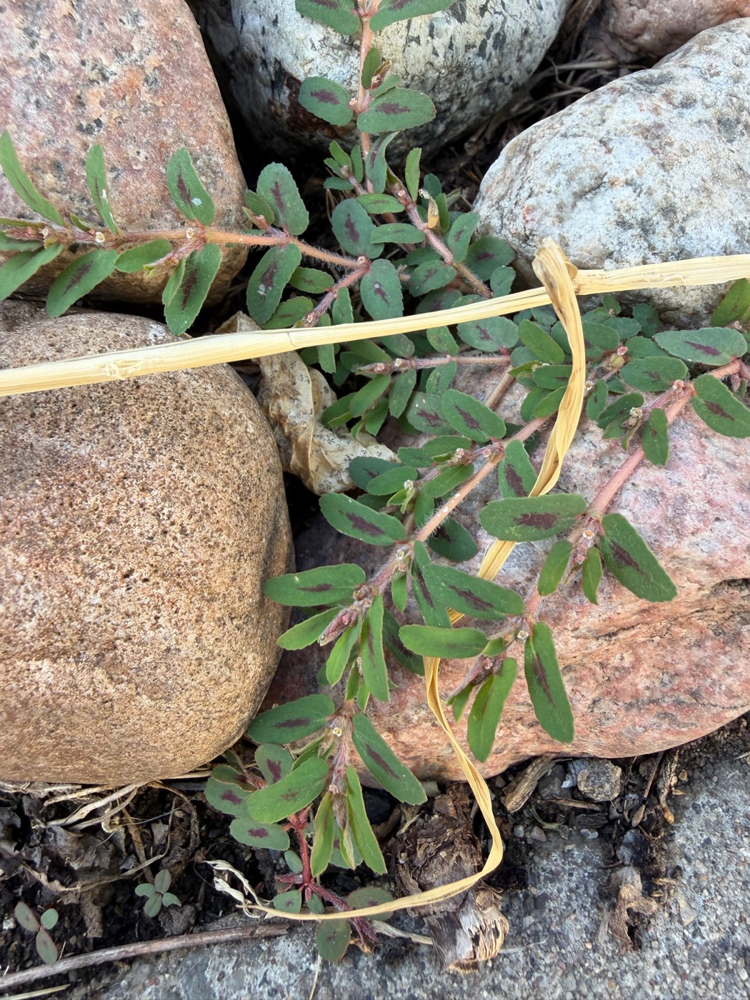
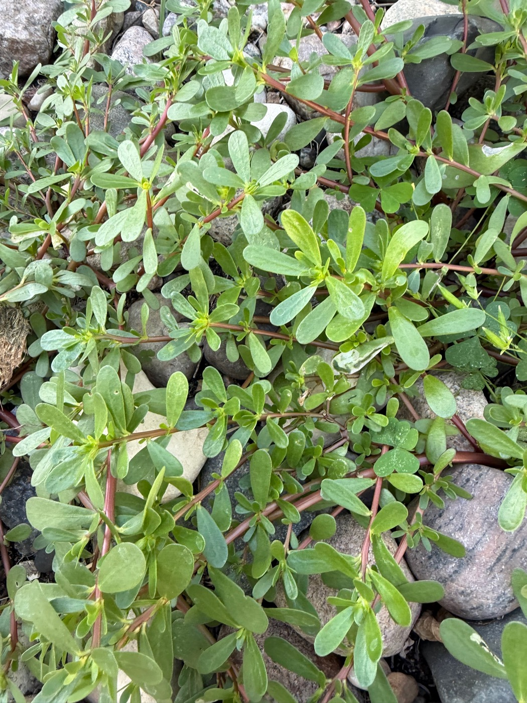
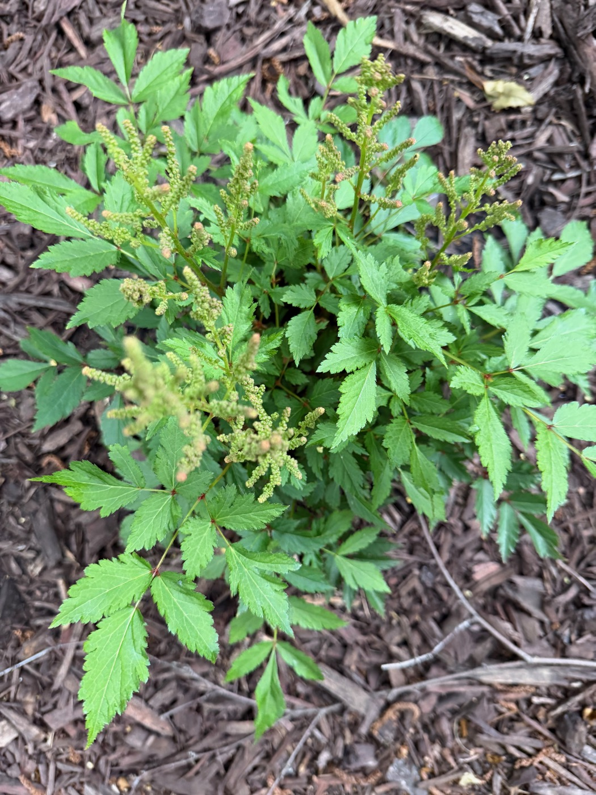
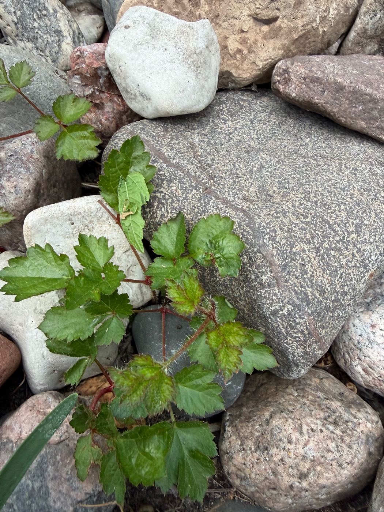
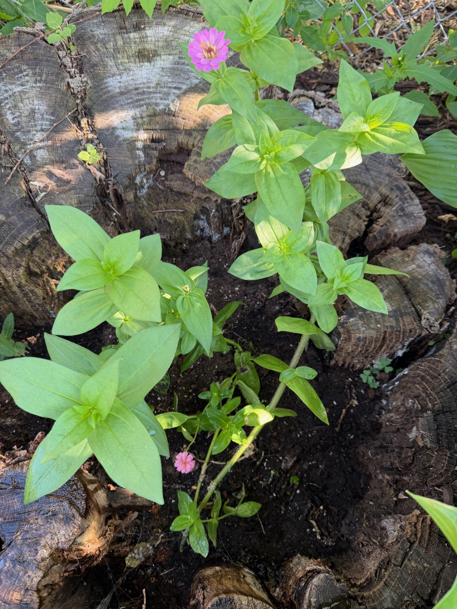

The rock garden has been running two side-by-side experiments in look-alikes this summer. Neither was planned, and the stakes are not the same in both.
The volunteers
Nobody planted either of these. Both showed up on their own this year, low and sprawling among the river rocks, and both happen to resemble each other just enough to be a genuine hazard for anyone identifying them at a glance. One is purslane — fleshy, reddish-stemmed, and perfectly edible, a weed that foragers actively look for. The other is spurge, similarly reddish-stemmed and similarly sprawling, and toxic — the sap alone is enough to irritate skin. Get the two backward and one makes a fine addition to a salad. The other does not.


The one that got away
The second pair is a plainer story about not looking closely enough. A new astilbe went into a mulched bed this year, bought and planted on purpose, plumes just starting to come up. Elsewhere in the same rock garden, an old astilbe had been growing quietly for years — quietly enough that early in the season it was mistaken for a weed and half pulled before anyone recognized what it actually was. It came back anyway, working its way up through the stones like it had never been touched.


The stump's second job
One more thing came out of the rock garden this year, unrelated to either pairing. A packet of zinnia seeds arrived in the mail this spring, sent by a company evidently hoping to be remembered. It got a better fate than usual this year. The leftover potting soil was dumped into the hollow of the old stump, and the seeds were thrown in on top. The experiment was started with no particular expectations attached.
The stump is what remains of the giant mulberry tree that used to shade the house and drop a small weather system of leaves on it every autumn. There was not quite enough soil to fill it flush with the top, which this year turned out to be plenty. The seeds came up anyway and bloomed.

The equipment gets its own inspection, separate from the botany.